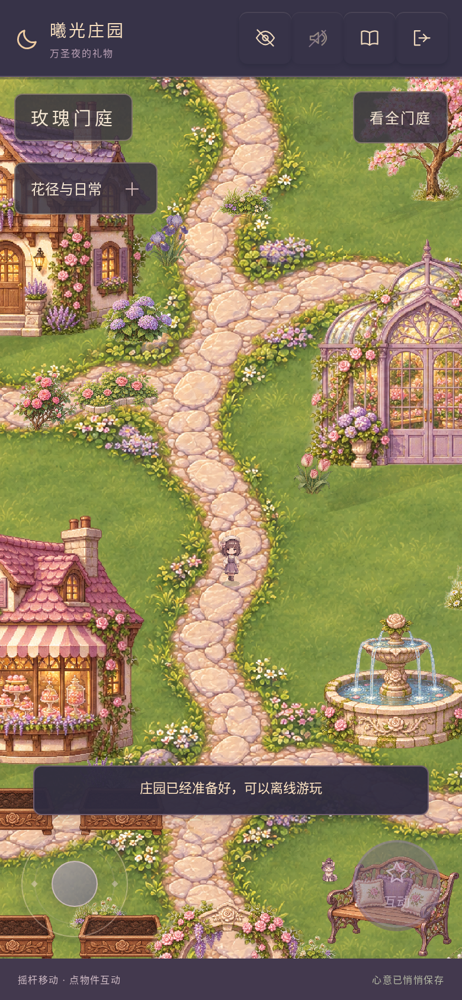
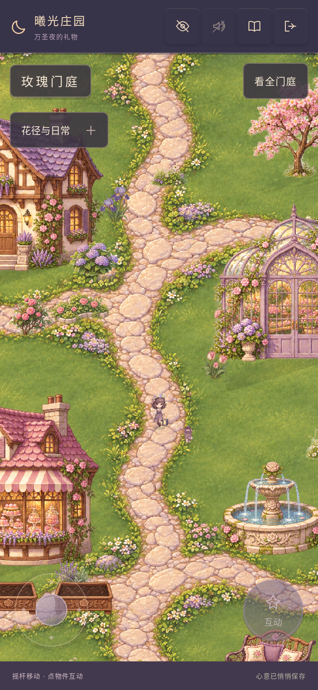
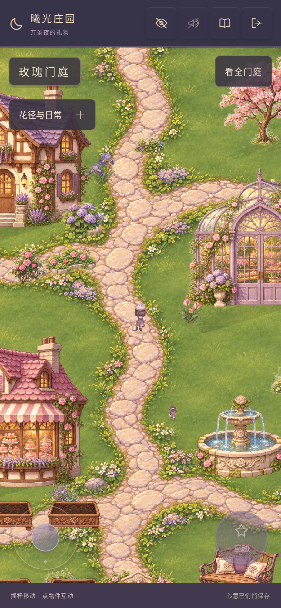
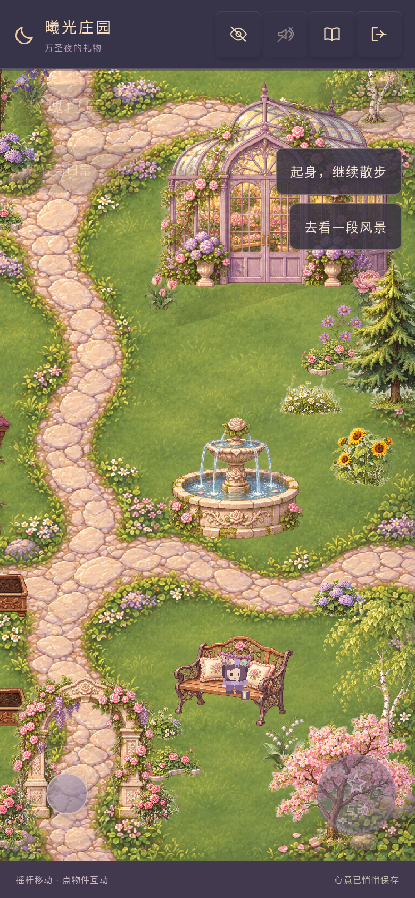
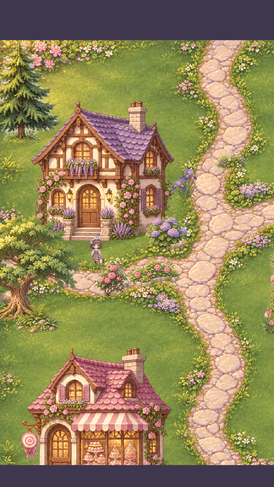

白天主世界第一阶段 · 所有对比来自真实 Phaser 游戏。原建筑与花铺保留，更新地形、分层树木、原服装行走和猫咪。正式版与原有预览继续保留。

方向动作与装备、稳定坐姿、隐藏界面：以下也是实际游戏截图。部分沿用旧素材的坐姿与其他服装尚待后续统一。

正面行走与装备
背面行走与遮挡
坐下与起身
小屏幕收起界面云端浏览器模拟，不等同实体iPhone性能测试。自动化原始记录：results.json。
完整森林、花谷、可行走湖岸、果园、山顶与遗迹主体仍按全图计划推进。小屋和工坊需要独立日照/窗景/灯光层。其余六套服装及高清坐姿动作未在本轮重绘。地形目前仍为区域绘画层，尚非连续过渡图块。
全地图后续路线 · 本轮实际文件与边界